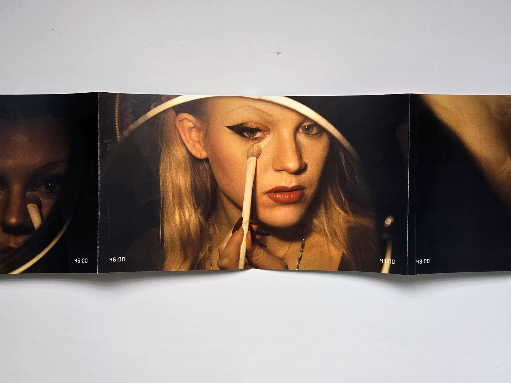
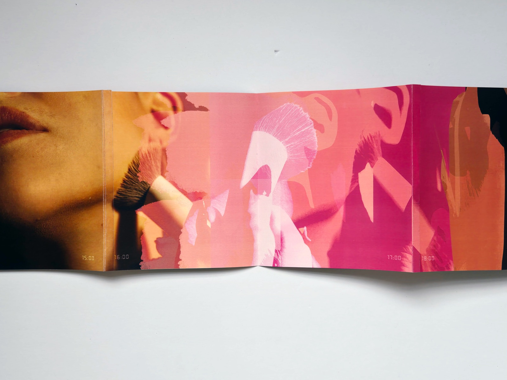
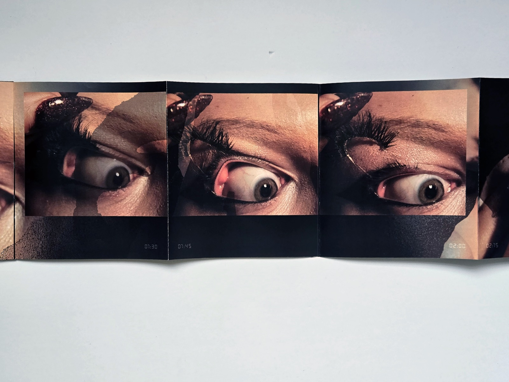
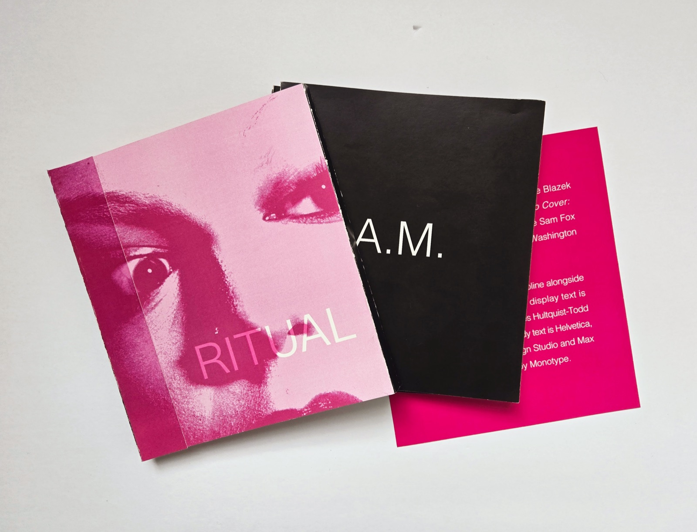
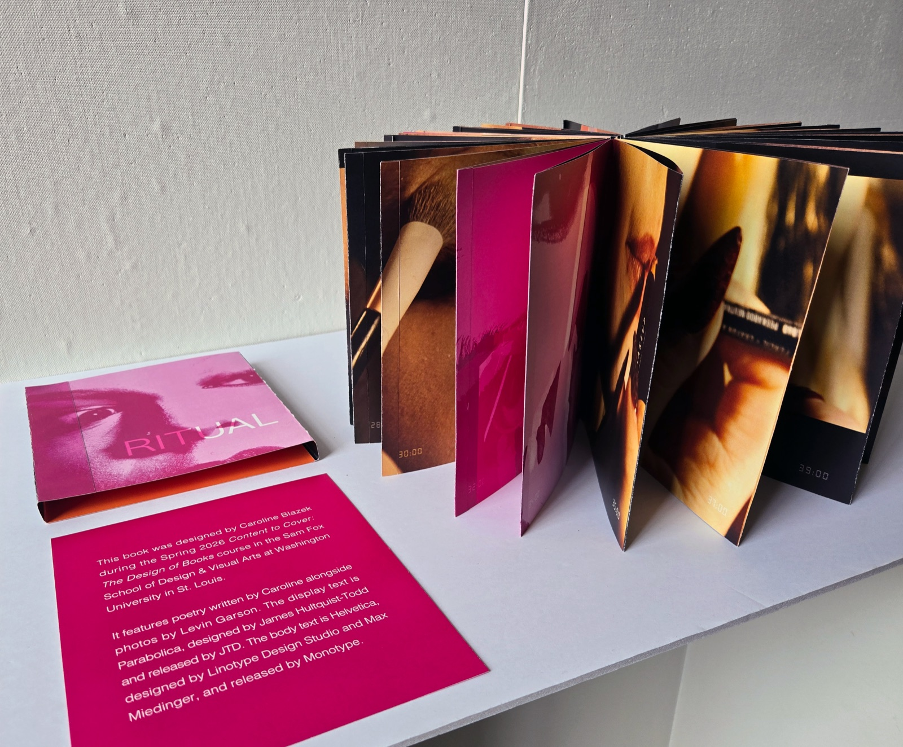

Ritual
- Art Direction
- Bookmaking
- Image Treatment
Ritual explores the quiet, meditative experience of applying and removing makeup each day. Close-up photographs of my own morning and evening routines unfold across an accordion book, so the routine reads as one continuous passage of time rather than a series of isolated pages, turning an ordinary act of self-care into a study of repetition, reflection, and daydreaming.
Photography by Levin Garson.

Morning
The morning sequence follows the gradual process of preparing for the day, moving closely across each feature of my face and slowing a familiar routine to show the care in each step. Vivid abstract forms interrupt the photographs as visualizations of daydreaming, the mental space that opens up during repetition to think back on the week or ahead to the day.



Evening
The evening sequence revisits the same ritual from a different angle. The photography loses saturation as the day closes, and tactile, dirty forms reflect the physical work of removing what has built up. The book ends with personal writing about the thoughts this final part of the routine brings: where the morning moves me forward, the evening returns me to myself.

